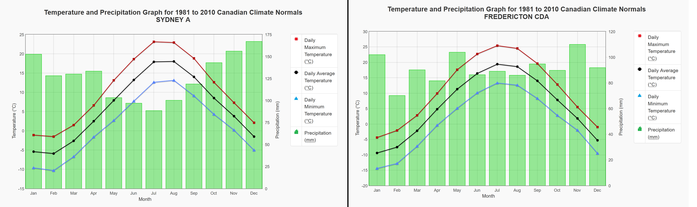

Main Page | Climate | Geographic History | Geological Landforms | Wildlife and Vegetation | Human Activity | Tourism | Bibliography
Due to the Atlantic Maritime Province (AME)'s closeness to the Atlantic Ocean, almost all of the cities within the AME have a distinctly maritime climate. So what does it mean if a place has a maritime climate? A maritime climate, compared to a continental climate, will have warmer winters and cooler summers. This means that the annual temperature range will be lower. This is because water has a higher heat capacity than soil. This means that water takes longer to warm up but holds heat for longer periods of time than soil. Also, sea water/water from nearby bodies of water can evaporate, creating water vapour. As the water vapour moves over land, it can cool and condense, forming more precipitation in maritime climates. Continental climates tend to have higher annual temperature ranges (hotter summers and colder winters) and an overall decrease in precipitation.
 Left: Climograph showing temperatures and amount of precipitation in Sydney, NS. Right: Climograph showing temperatures and amount of precipitation in Fredericton, NB. Sydney, NS is closer to the Atlantic Ocean compared to Fredericton, NB, and the data shown in the climographs reflect this. Sydney has a smaller annual temperature range of 23.9 degrees Celcius whereas Fredericton has a range of 28.8 degrees Celcius. Also, Sydney has more precipitation annually, indicating a maritime climate. (1517.2 mm vs 1094.7 mm) Source one, Source two
Overall, the climate of the Atlantic Maritime Ecozone is cool, moist, and has averages of -5 degrees Celcius in the winter and averages of 14 degrees Celcius in the summer. As mentioned above, the climate is heavily influenced by the moisture from the Atlantic Ocean. The large amounts of precipitation also means that the AME has more storms than any other part of Canada. At certain times of the year, the cold Laborador current and the warm Gulf Stream mix, forming large amounts of fog near coastal areas.
Thanks for reading!
Return to the top of the page.
© Trevor Li 2018, all rights reserved. All images by Trevor Li unless noted. Background image by the Lubuntu Artwork Team